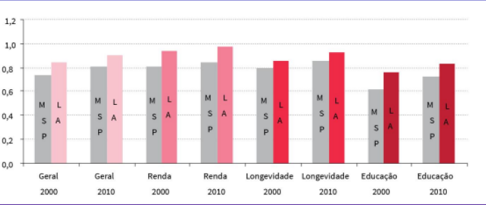
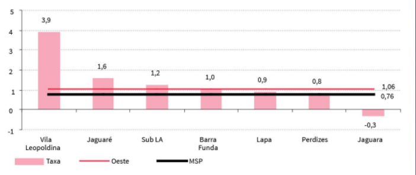
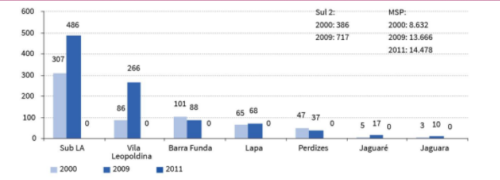

INFORMAÇÕES DEMOGRÁFICAS
Algo muito importante para a classificação de um bairro e sua características, acima de todos os outros tópics está relacionado a suas informações demográficas, pois é a partir dela que conseguimos distinguir a situação atual da população que ali vive, conseguimos distinguir seu gênero, idade, nível de renda etc.
MAPA

Dados Demográficos:
- Área: 7,2 km²
- População: (88°) 30.188 hab. (2010)
- Densidade: 41,93 hab/ha
- Renda: média R$ 5.737,79
- IDH: 0,907 - muito elevado (23°)
IDH/ Indice de Desenvolvimento Humano na Vila Leopoldina 2000 e 2010

Comparação da Taxa de Crescimento Populacional 2022

Comparação da População em situação de rua
